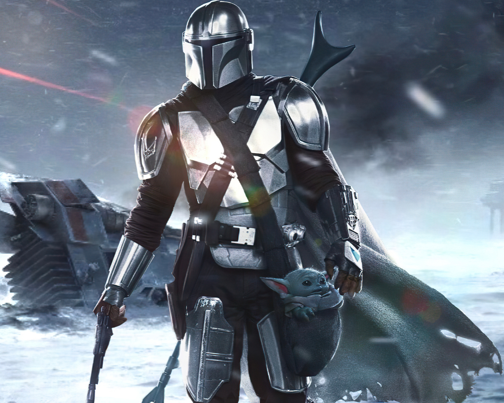
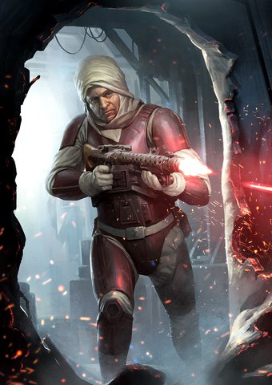
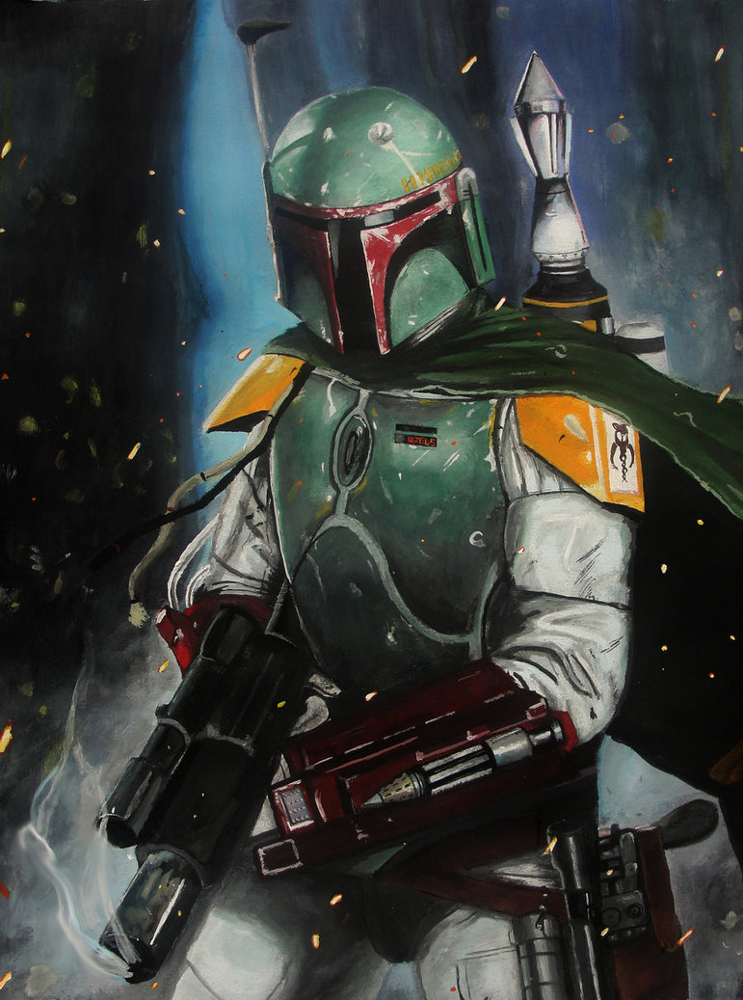

Você esta em sua nave, vagando pelo espaço quando recebe uma mensagem estranha no seu visor, um pedido de socorro vindo de uma nave alguns anos luz de você e ao lado da mensagem, uma recompensa ao que parece ser uma ameaça de alto quadrante. Você decide ir até a fonte da mensagem.
Ao chegar, você analisa a nave por fora e percebe que se trata de uma nave de transporte de cargas, cujo seu tamanho é parecido com um Destroyer Estelar.
Escolha seu Personagem
Mando e Adoy

Caçador de recompensas que se acha o melhor de todos mesmo sendo o mais excluído da Guida dos Caçadores de Recompensas. O lobo solitário.
Dengar

Caçador de recompensas muito respeitado, idolatrado e temido pela Guilda de Caçadores de Recompensas.
Fett

Caçador de recompensas mediano na Guilda de Caçadores de Recompensas. Trabalho sempre acompanhado do seu mascote Adoy.